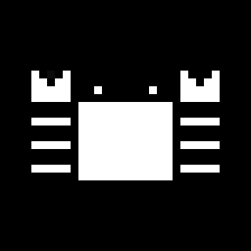
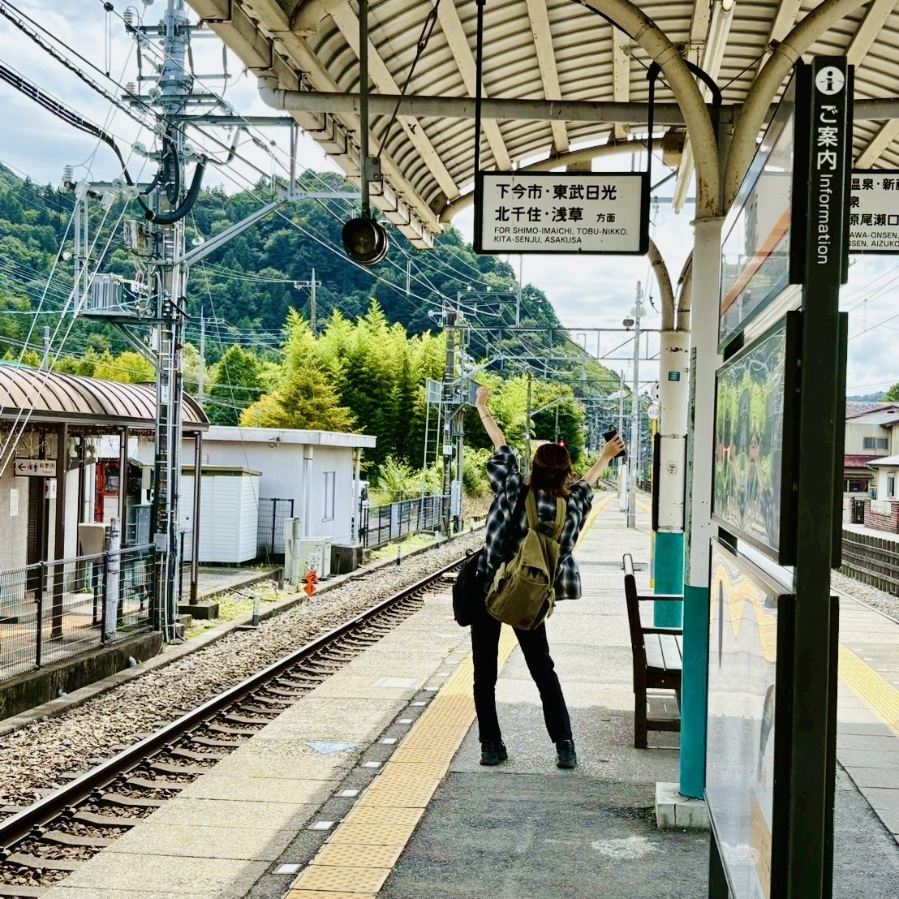
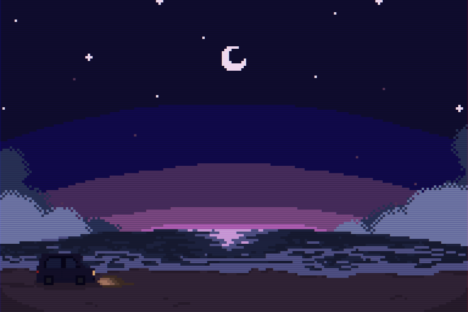
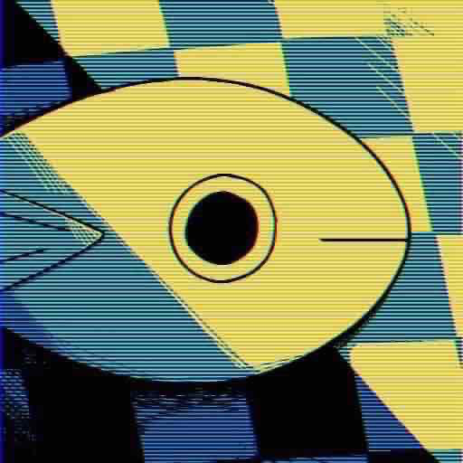
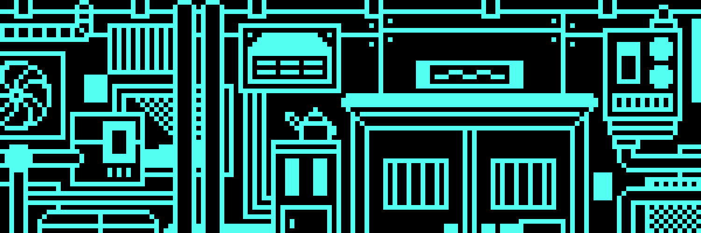
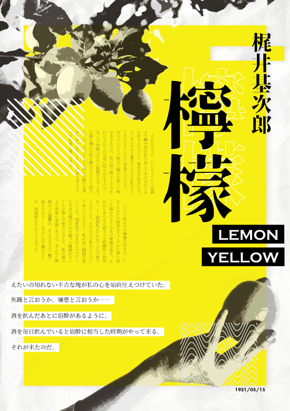
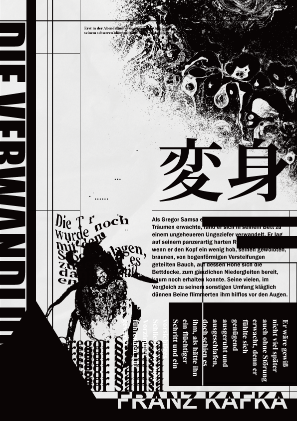
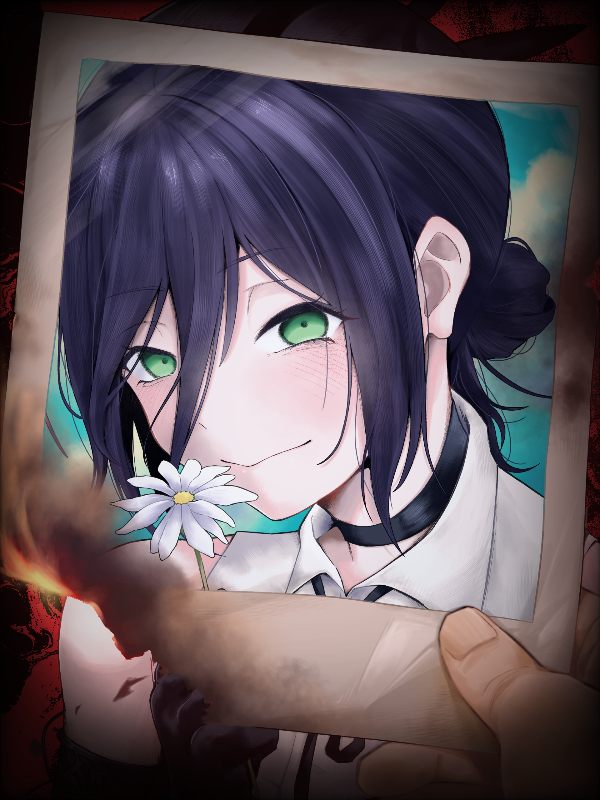

ABOUT ME

宮城大学 事業構想学群 価値創造デザイン学類2年の早坂有結(はやさか あゆ)です。趣味は色々ありますが、今は旅行とゲームがアツいです。
趣味(一部抜粋)
- 旅行
- 外食
- 温泉・サウナ
- 散歩
- カラオケ
- ゲーム
- モノづくり

今年の夏は岩手，栃木，東京の三か所に行ってきました。写真は栃木旅行に行ったときのものです。岩手と栃木には温泉旅行に、東京には東京国立博物館と国立科学博物館を目当てに。博物館も科学館も美術館も水族館も動物園も全部好きなので、いずれ日本中の観光施設を踏破する野望があります。
近頃はふところが大変寂しいためまったく旅行に行けていません。が、春休みに向けて東京＆関西旅行計画を計画しています。お金がない！
あとはゲームも好きです。とは言ってもスマホゲームはまったくやらず、もっぱらコンシューマーゲームばかりやっています。ジャンルはRPGやシミュレーションが好きです。今年やったゲームの中では「ゼルダの伝説 大地の汽笛」や「未解決事件は終わらせないといけないから」等が面白かったです！
WORKS





